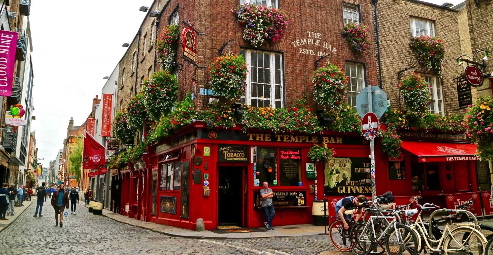

Home to Ireland's greatest cultural treasure, the Book of Kells, and the stunning Long Room library filled with rare books and busts of great thinkers.
Discover the story of Ireland's most famous beer through interactive exhibits, finishing with a pint at the rooftop Gravity Bar with panoramic city views.
Experience Dublin Castle, a historic complex at the heart of the city, featuring grand State Apartments, gardens, and centuries of Irish heritage.
Walk the cobbled streets of Temple Bar, Dublin's cultural quarter, buzzing with live music, vibrant pubs, art galleries, and traditional Irish charm.
